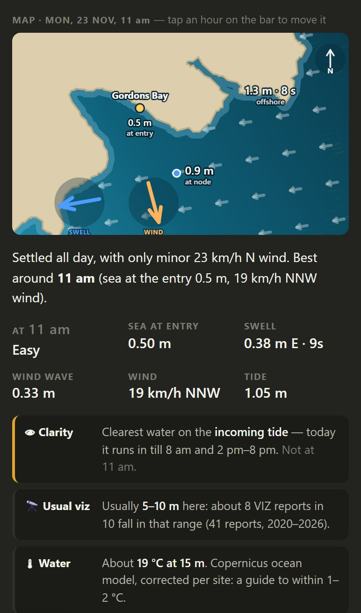

Gordons Bay is in VIZ Forecast
A free, volunteer-run forecast for Sydney dive sites: hour by hour, how easy the entry and exit will be, and what the visibility is likely to do. Here is what it shows for Gordons, how it is worked out, and where Gordons divers can help make it better.
Open VIZ ForecastWhat you get for Gordons Bay


- Entry & exit forecast, hour by hour for 10 days. Days 8–10 are a longer-range outlook and marked as such.
Easy Caution Avoid
- A map of the bay for the hour you tap: swell and wind direction, the open-ocean swell, the sea just outside the bay, and the sea state at the entry.
- Why the hour scores as it does: swell, wind waves, wind and tide.
- Visibility forecast: explained below.
- Water temperature at 15 m, and a suggested wetsuit for scuba and for freediving.
- The Randwick Council Gordons Bay beach cam, one tap away.
- A weekend outlook for the whole coast, ready to share.
How the entry & exit forecast is worked out
Every hour starts from three things:
- a nearshore wave forecast for a point in open water just outside the bay,
- how much of that swell reaches the entry, which depends on where it comes from (the bay shelters some directions far better than others),
- the local wind and the tide. High tide counts against the entry at Gordons, because local divers find it harder.
The result is checked against real dives: posts in the VIZ Facebook group from 2020 to 2026. Gordons has about thirty posts from dives there, eight of which say plainly how the entry and exit were. That is enough to rule out the worst mistakes (none of those dives falls on an hour the app calls Avoid), but not enough to call Gordons settled. That is why the app marks it as still being checked.
The open question: east swell
Experienced local divers say a 1.5 m east swell is not a Gordons day: it only takes a little refraction for it to wrap into the bay and reach the entry. The app is currently more relaxed than that. On Mon 23 Nov 2026, for example, with about 1.3 m of east-north-east swell offshore, it read Gordons as Easy all day.
But several VIZ posts describe good dives at Gordons on days the wave model shows a similar east swell outside the bay:
| Date | East swell outside | What the post said |
|---|---|---|
| Sun 7 Feb 2021, 10:15 am | 1.5 m | Dived; viz 7–8 m |
| Sun 15 May 2022, 9 am | 1.3 m | Entry described as easy |
| Mon 11 Mar 2024, 4:15 pm | 1.3 m | Dived |
| Tue 12 Mar 2024, 8 am | 1.4 m | "Quiet day at Gordon's" |
| Sun 11 May 2025, 8:36 am | 0.9 m | "Surprisingly good entrance and exit" |
Did you dive on any of these days? Which side of the bay did you go in, and how was it really? Your answers decide how hard the app should be on east swell at Gordons.
Where the data comes from
Waves: the NSW Government's Nearshore Wave Tool
The Bureau of Meteorology's national ocean wave model (AUSWAVE) forecasts the open sea. The NSW Government's Nearshore Wave Tool carries that in to the coast, through the bending and sheltering that headlands and the seabed cause, and is checked against the state's wave buoys. It forecasts 10 days ahead, hour by hour, at points every 250 m along the coast. Gordons has its own point, in open water just outside the bay.
It also splits the waves in two: swell, the long waves from distant storms that wrap into bays and bring surge, and sea, the short chop raised by local wind, which a bay blocks far better. The app carries each into the bay separately. Most forecasts give one offshore number for all of Sydney; this one already knows what the coast does to the waves at each spot.
Wind: the forecast, corrected by a live anemometer
The wind forecast is the Bureau's, through WillyWeather, for Coogee; days 8–10 come from Open-Meteo's longer-range models. Through the day, the app checks it against the Bureau's live wind station at Little Bay: the measured wind replaces the forecast for the hours already past, and the next few hours ease back to the forecast. A live reading can make an hour look worse, but never lifts an hour the forecast says to Avoid.
How the visibility forecast works
We do not forecast visibility in metres. We tested it, and it cannot be done reliably a week out by anyone. Instead the app tells you what is usual and when to expect worse:
- The usual range: 5–10 m at Gordons, from 41 VIZ reports. Eight in ten fell inside it.
- "Viz may be reduced" when any of these points to murkier water:
- satellite images show murkier water off the coast (on those days divers reported poor viz about 1 day in 3, against 1 in 5 otherwise);
- heavy rain over the past week;
- big swell in the past few days.
"May be" is deliberate: two days in three that carry the warning still turn out fine.
How you can make it better
The forecast learns from dive reports, and the ones it needs most are the hard ones. People mostly post their good days, so the rough end is where the app knows least.
- Post your Gordons dives in the VIZ Facebook group with the date, the time you went in, which entry, viz in metres, and how the entry and exit were (surge, waves).
- Post the days you called off, or wished you had. A "not today" with a time is worth several good-day reports.
- If your club keeps a dive log with dates and conditions, including cancelled dives, that history would help more than anything else. Get in touch.
- Tell us when the app gets Gordons wrong.